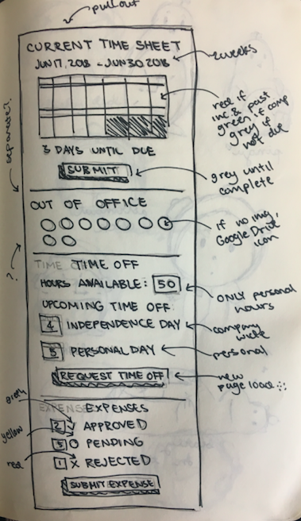
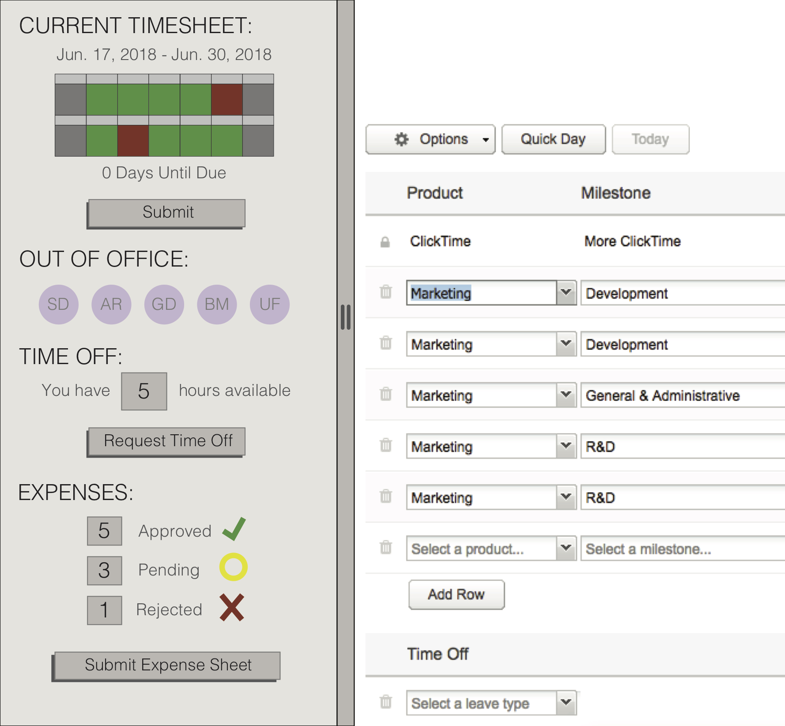
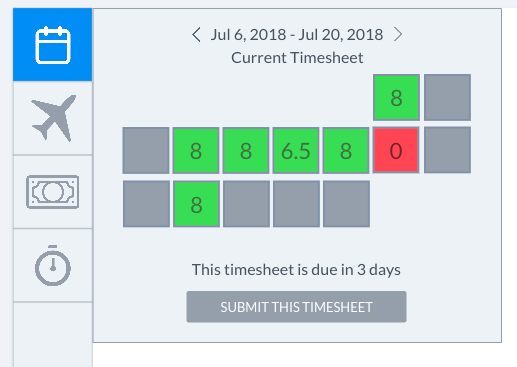
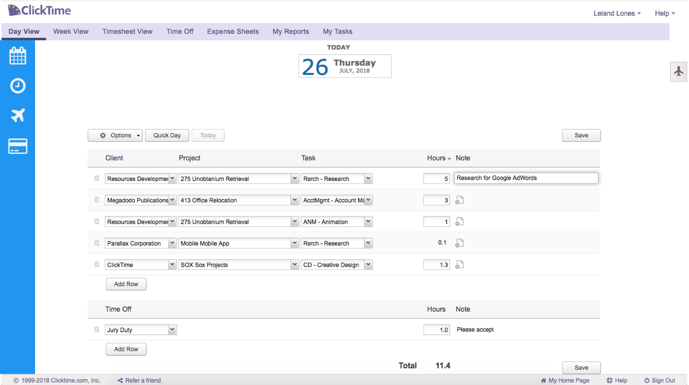
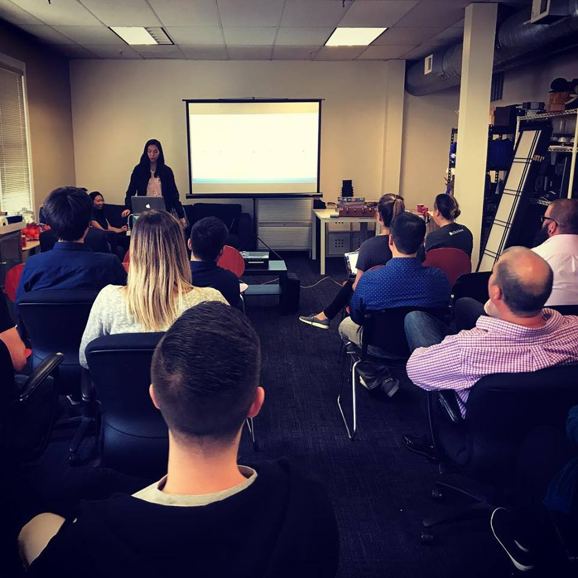

ClickTime Sidebar
Creating a new mode of navigation and information-intake for our users on the existing ClickTime web-application.

Problem: Users were generally unhappy with the clunky, outdated feel of the current ClickTime web-application. They disliked how long it took to reach certain tools and information as well as the outdated UI.
Solution: Our team of interns prototyped a ClickTime sidebar that focused both on both providing ease of navigation and better information-intake. Additionally, we aimed to address the concerns regarding the current application's UI by implementing more modern techniques and visuals inspired by other products.
Method: We began by conducting a product landscape of existing sidebars and took note of common characteristics. We noticed that the majority of the sidebars in modern, successful products were non-intrusive, informative, and catalyzed change on the main application's interface.

We then created several mock-ups of a potential sidebar, first by sketching, then by tools like Adobe XD and MarvelApp.
  Implementation: Our sidebar eventually evolved to a minimalistic list of icons that, when hovered or clicked, yielded its corresponding "widget." This enabled our users to freely use both the sidebar and the main web-application interface without intrusion from one on the other. We also focused on using intuitive iconography and colors that could convey certain messages in one small panel without risking ovexposure to information. We managed to do all of this in React, overlaying it on top of the old implementation of the web-application. This was a major milestone because integration of the two tools had initially been an obstacle to upgrading ClickTime's UI.

Conclusion: After completing a working prototype of our sidebar, we presented it to the entire ClickTime office, including remote workers, in a one-hour presentation that, according to CEO of Mann Consulting Harold Mann, was "one of the most well-thought-out, well-put-together intern projects of ClickTime." The ClickTime sidebar has now been adopted by the current employees of ClickTime and is under code review.
